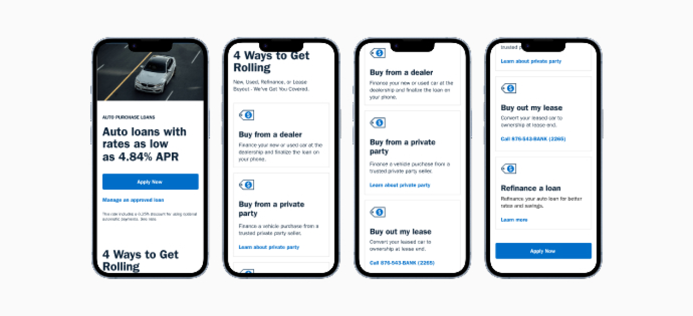
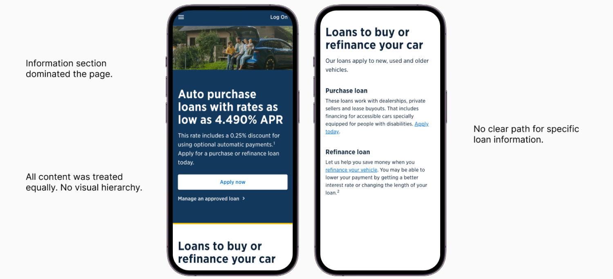
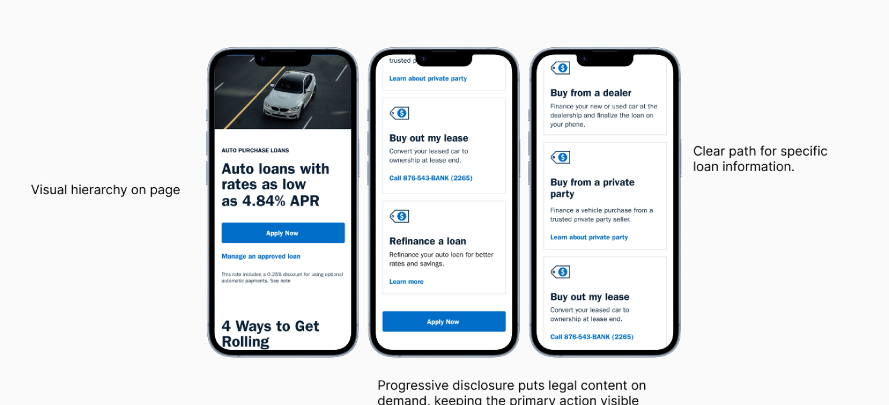
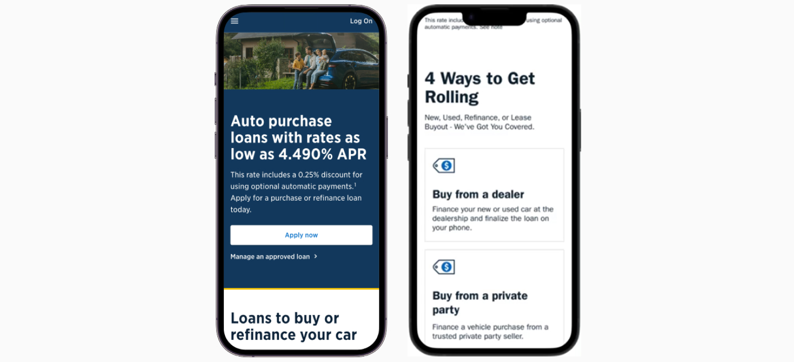

AUTO LOAN APPLICATION REDESIGN
Driving loan completion through mobile-first design.
Led end-to-end UX strategy from stakeholder research through
implementation. Facilitated cross-functional alignment
across legal, compliance, and marketing. Established
mobile-first design patterns now used across lending
products.
role
Lead UX Designer
Timeline
6 months
Teams involved
Marketing, Product Manager, Content Strategy, Developer
impact & Results
Removing friction created measurable outcomes.
19%
Reduction in application dropoffs
Measured at the highest abandonment point in the prior flow.
The redesign also produced a reusable progressive disclosure
component now part of the banking design system.

Auto loan application redesignBUSINESS CONTEXT
Experience gaps were creating avoidable losses.
Content Overload 1
Auto lending represents a critical revenue stream with
significant competitive pressure from dealer financing and
fintech challengers. Application abandonment created revenue
leakage at the point of highest member intent.
Content Overload 2
With 67% of traffic coming from mobile, the desktop‑first flow
created avoidable friction.
The redesign aligned with enterprise digital transformation while directly improving clarity, usability, and conversion.
The redesign aligned with enterprise digital transformation while directly improving clarity, usability, and conversion.
Content Overload 3
Legal requirements added extensive disclosure text to the
page. The information section dominated the page, pushing key
actions below the fold. Members couldn't find answers to their
most common questions.
Content Overload 4
Legal requirements added extensive disclosure text to the
page. The information section dominated the page, pushing key
actions below the fold. Members couldn't find answers to their
most common questions.
THREE OBSTACLES
Completion was failing before members ever reached the application.
Content Overload
Legal requirements added extensive disclosure text to the page.
The information section dominated the page, pushing key actions
below the fold. Members couldn't find answers to their most
common questions.
Unclear Prioritization
All content was treated equally with no visual hierarchy.
Critical information was buried alongside legal disclaimers.
Members couldn't determine if they were finding the information
they needed.
Accessibility Concerns
Our primary audience of older military veterans struggled with
dense text blocks. Mobile users (67% of traffic) faced
especially difficult navigation. No clear path existed to find
specific loan information.
Content Overload
Legal requirements added extensive disclosure text to the page.
The information section dominated the page, pushing key actions
below the fold. Members couldn't find answers to their most
common questions.

Before: Content Overload no visual hierarchy, lost information behind links.Four Principles
Every decision had a reason.
Progressive Disclosure
Show only what members need at each decision point. Collapsed
legal disclosures behind clear "Learn more" links, reducing
cognitive load while maintaining full compliance.
Compliance as a Design Constraint
Legal disclosure requirements were not an obstacle to work
around. They were a structural input that shaped every layout
decision from the start.
Visual Hierarchy as Guidance
Use size, weight, and spacing to communicate importance.
Members should scan and immediately understand what to do next
without reading every word on the page.
Clarity Over Completeness
Members needed the right thing at the right moment, not
everything at once. Every section was evaluated against
whether it moved them forward.
THE REDESIGN
Structure did the work that copy could not.
Restructured Information Architecture
Separated rate information from application entry points.
Created a clear visual path from awareness to application. Moved
secondary content below primary actions so members reach
decisions faster.
Progressive Disclosure Pattern
Collapsed loan type details into expandable cards. Members see
key rates and CTAs immediately, with full details available on
demand. Legal disclosures accessible without dominating the
view.
Content Overload
Legal requirements added extensive disclosure text to the page.
The information section dominated the page, pushing key actions
below the fold. Members couldn't find answers to their most
common questions.
Content Overload
Legal requirements added extensive disclosure text to the page.
The information section dominated the page, pushing key actions
below the fold. Members couldn't find answers to their most
common questions.

After: Clear hierarchy and scannable content.
Before and AfterSTAKEHOLDER ALIGNMENT
The hardest design problem was not on the screen.
Legal & Compliance Partnership
Led working sessions with legal, compliance, and project teams
to separate non-negotiable requirements from opportunities for
simplification. Annotated prototypes became the shared language
for evaluating compliance-friendly design solutions.
Marketing & Content Strategy
Partnered with marketing on plain-language content that balanced
brand voice with regulatory requirements. Established reusable
content patterns for lending products.
Technology Collaboration
Collaborated with engineering to balance design intent with
component library constraints and technical feasibility.
Prioritized changes by impact to support phased delivery.
Content Overload
Legal requirements added extensive disclosure text to the page.
The information section dominated the page, pushing key actions
below the fold. Members couldn't find answers to their most
common questions.
REFLECTION
The questions I would still pursue.
Legal & Compliance Partnership
The 19% dropout reduction was real, but it measured the highest
abandonment point before the application. What I never got to
see was whether members who made it through the redesigned flow
actually completed their applications at a higher rate. That
data would have told me whether I solved the right problem or
just moved it downstream.
The other thing I keep coming back to: progressive disclosure assumes users know what they don't know. Collapsing legal details behind expandable cards works when someone already understands what a loan disclosure is. I am not convinced it worked the same way for a 22-year-old financing their first vehicle. I would want to run sessions specifically with first-time applicants before calling that pattern a success.
The other thing I keep coming back to: progressive disclosure assumes users know what they don't know. Collapsing legal details behind expandable cards works when someone already understands what a loan disclosure is. I am not convinced it worked the same way for a 22-year-old financing their first vehicle. I would want to run sessions specifically with first-time applicants before calling that pattern a success.
Marketing & Content Strategy
Partnered with marketing on plain-language content that balanced
brand voice with regulatory requirements. Established reusable
content patterns for lending products.
Technology Collaboration
Collaborated with engineering to balance design intent with
component library constraints and technical feasibility.
Prioritized changes by impact to support phased delivery.
Content Overload
Legal requirements added extensive disclosure text to the page.
The information section dominated the page, pushing key actions
below the fold. Members couldn't find answers to their most
common questions.